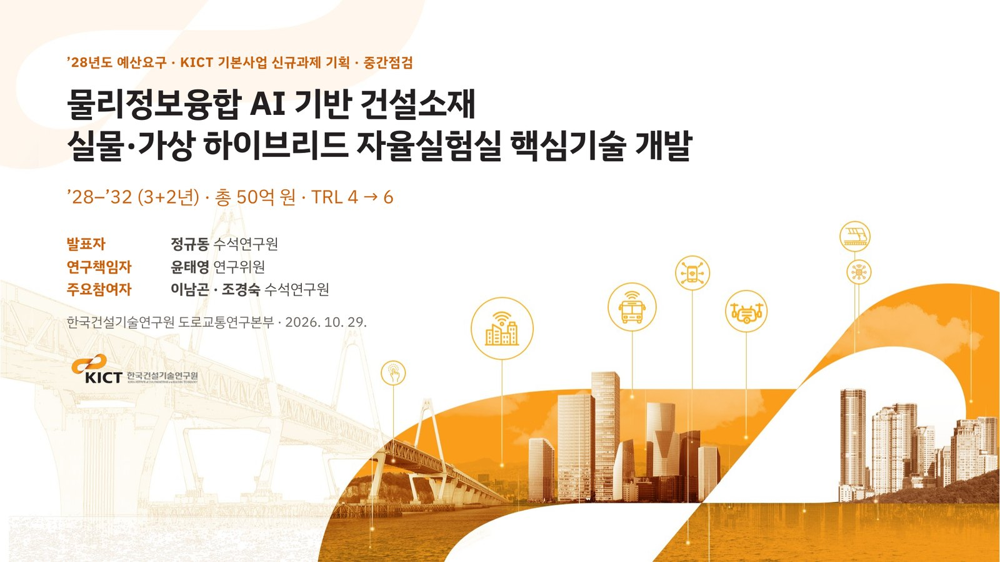
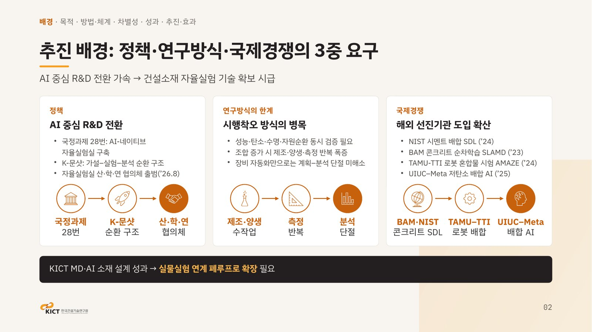
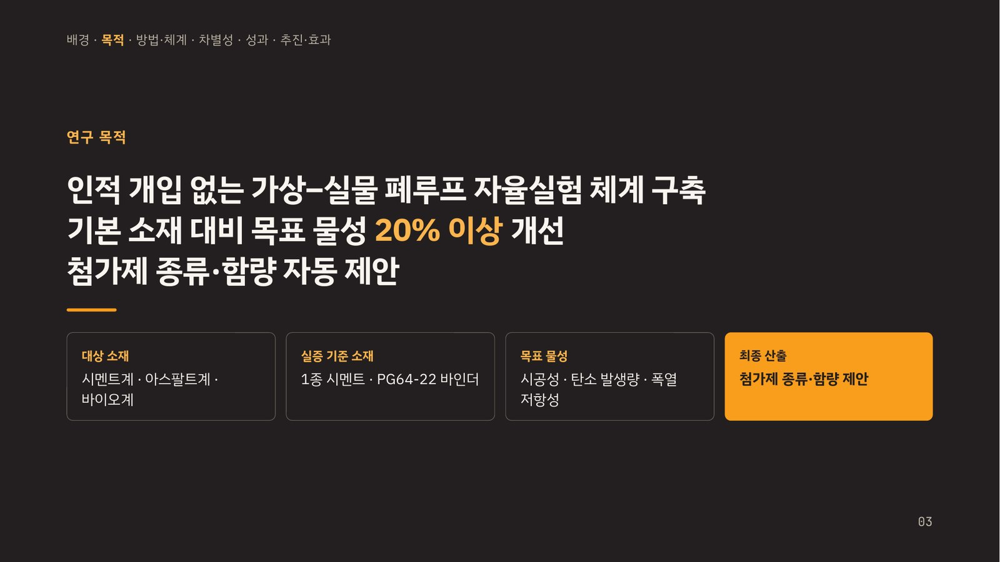
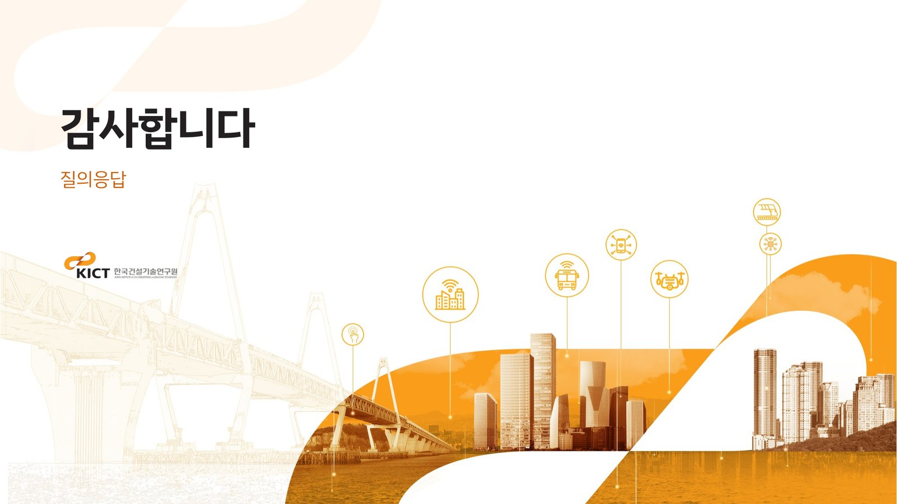

OCT 29, 2026 · KICT FY2028 BASIC RESEARCH BUDGET REQUEST · INTERIM REVIEW OF A NEW PROJECT PLAN2026. 10. 29. · ’28년도 KICT 기본사업 예산요구 · 신규과제 기획 중간점검
Core Technologies for a Physics-Informed AI Hybrid Physical–Virtual Self-Driving Laboratory for Construction Materials
물리정보융합 AI 기반 건설소재 실물·가상 하이브리드 자율실험실 핵심기술 개발
Only 4 of the 23 slides are shown: cover, background, objectives, and closing. The slides are in Korean, and the presentation file is not provided.
전체 23장 중 표지 · 추진 배경 · 연구 목적 · 마무리 4장만 공개합니다. 발표 파일은 제공하지 않습니다.



